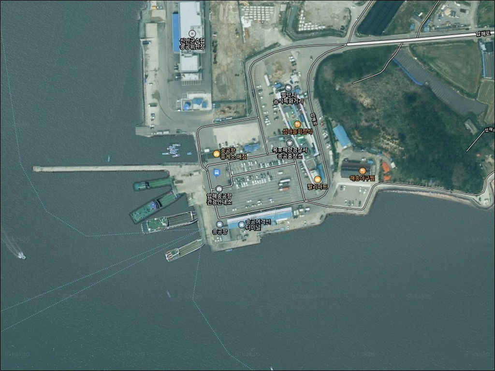
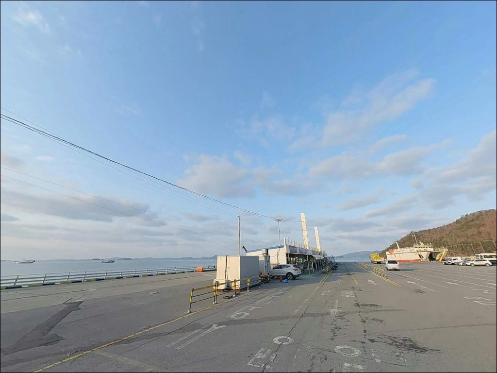
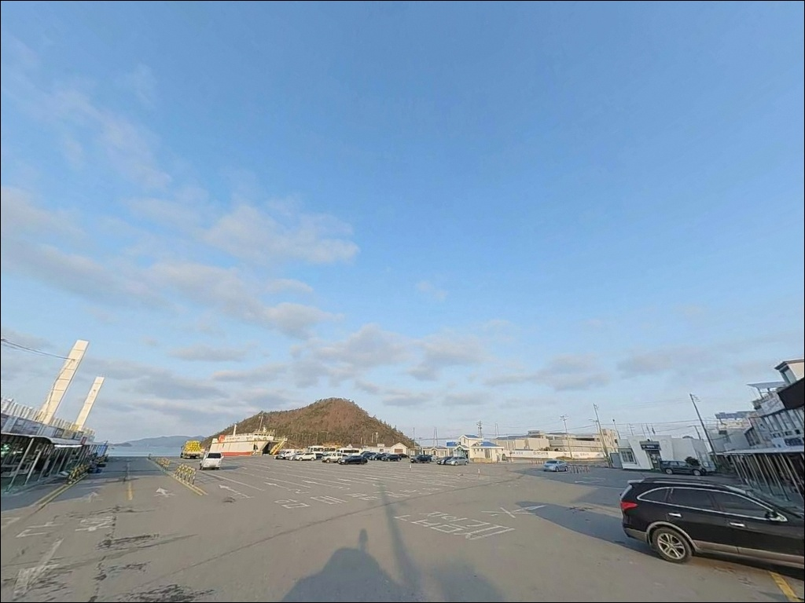
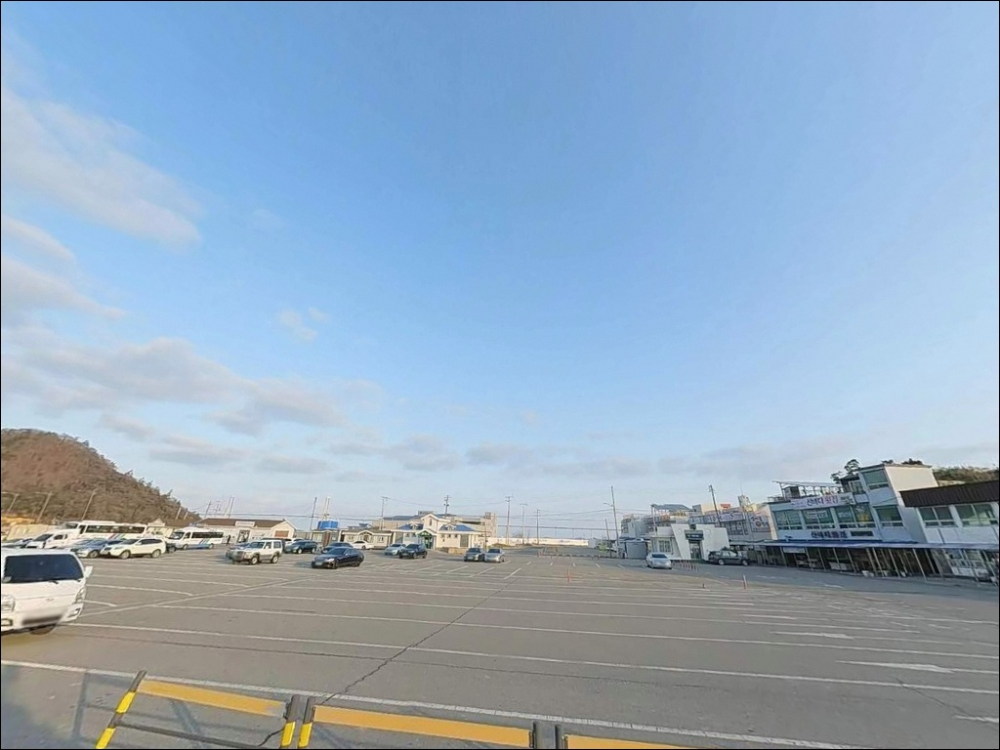
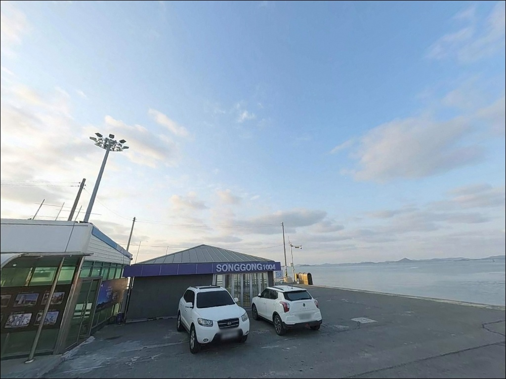
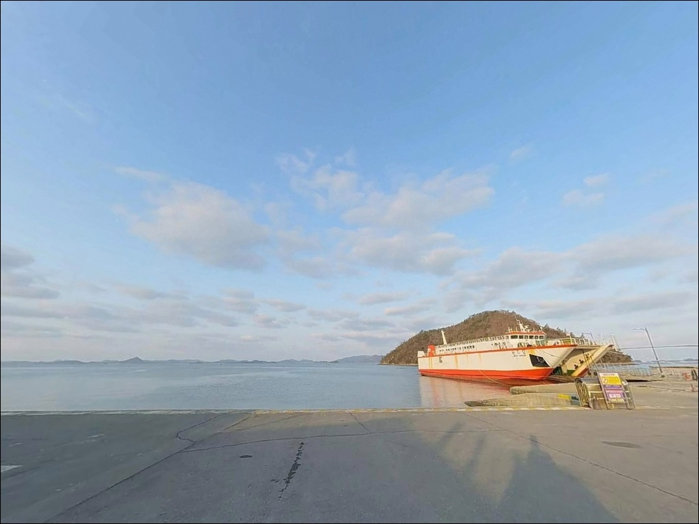
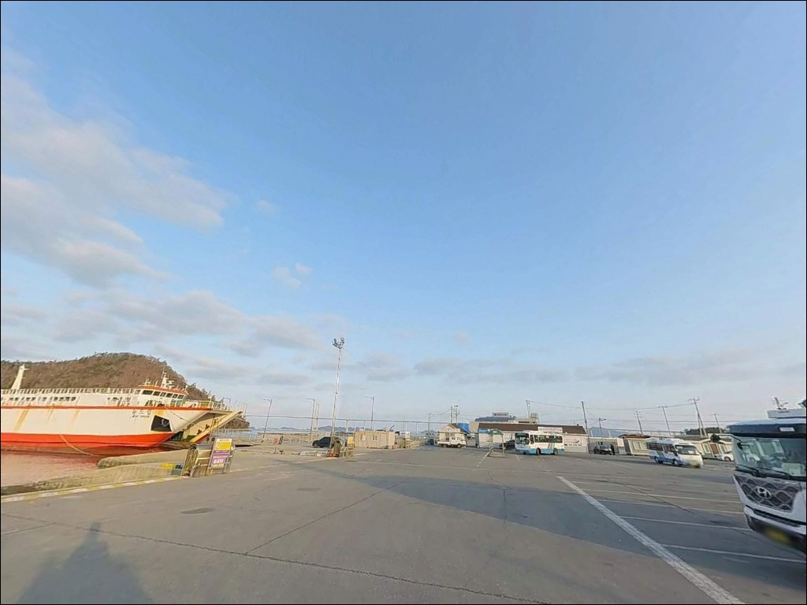
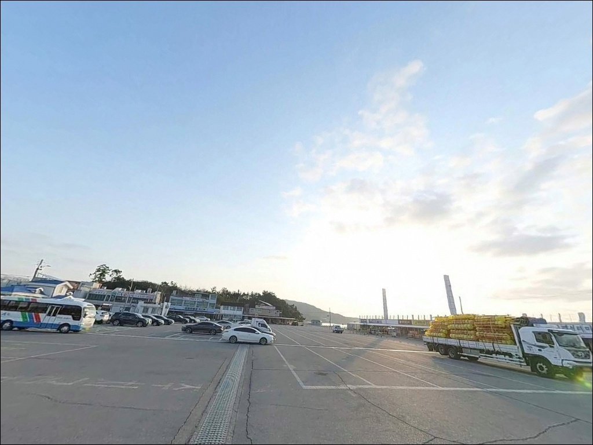
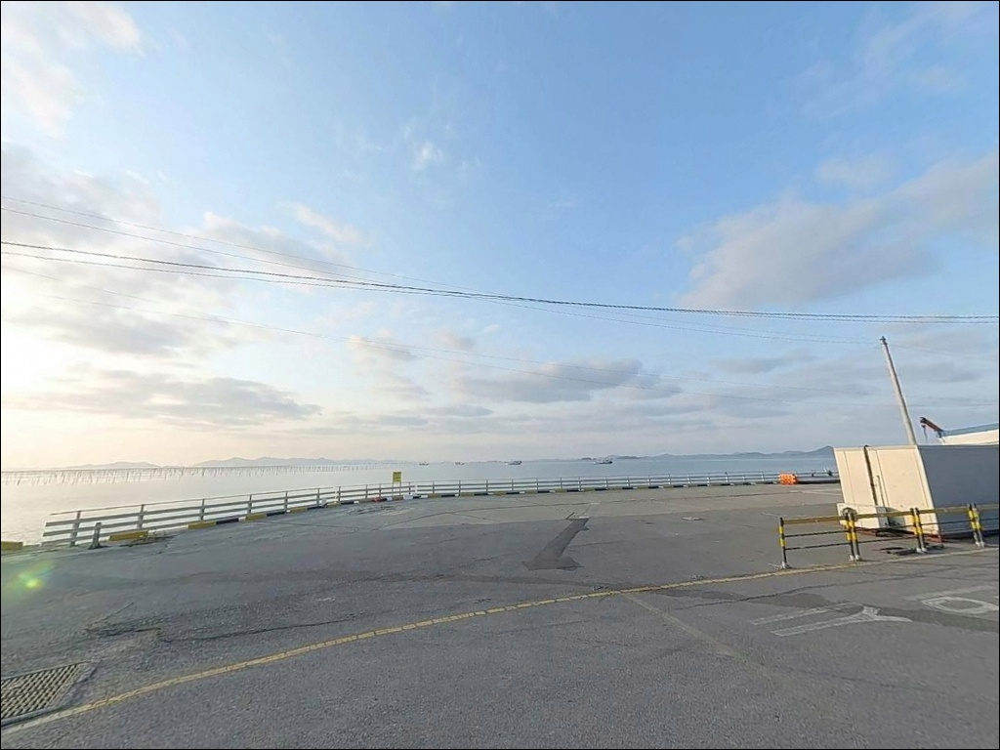

송공항(송공리선착장), 전남 신안군 바다와 가장 가까이 머무는 차박, 낚시 해안 명소
이 페이지에는 광고(제휴 링크 포함)가 있으며, 광고 링크를 통해 구매하면 운영자가 판매 수익 또는 수수료를 받을 수 있습니다. 포인트 사진: 카카오맵 스카이뷰·로드뷰. 이 페이지의 지도·사진 이미지는 카카오맵의 실제 서비스 이미지와 다를 수 있습니다.


포인트 안내
송공항(송공리선착장)
전남 신안군 압해읍 송공리 718-55
서해 선착장에서 물때 계산 없이 낚시대를 펼치면
사리 전후 조류가 봉돌을 끌어내려
채비 컨트롤 자체가 불가능해집니다.
송공항은 조수간만의 차가 큰 서해 압해도 연안에 위치한 만큼,
물때 판단이 낚시 여건의 시작과 끝을 결정하는
포인트입니다.
이 글은 송공항의 진입 동선, 차박 여건,
물때 판단 기준, 지형 기반 낚시 스타일 적합성에 집중합니다.
조황 단정이나 특정 어종 보장은
이 글의 범위에 포함되지 않습니다.

1. 진입 동선과 포인트 접근성
압해대교를 통해 압해도로 진입한 뒤
압해로를 따라 서쪽 끝단 방향으로 이동하면
송공항에 닿는 구조입니다.
목포 시내에서 대교를 건너는 경로로,
포장도로 전 구간이며
일반 차량 진입에 무리가 없는 수준입니다.
여객선터미널이 운영되는 항구 특성상
진입로와 항 내부 공간이 모두 넓게 확보되어 있습니다.
대형 버스도 회차가 가능한 수준의 부지 구조로,
SUV나 캠핑 장비를 실은 차량도 진입과 주차에 큰 어려움이 없는 편입니다.
주차는 여객선터미널 인근 공용 주차 공간과
방파제 인근 공터를 활용하는 방식이 일반적입니다.
낮 시간대에는 여객선 이용객 차량으로 혼잡할 수 있으므로,
낚시 목적 방문이라면 이른 아침이나 야간 시간대가
자리 확보에 유리합니다.

2. 차박 환경과 야간 체류 여건
송공항은 여객선 운항이 있는 현역 항구로,
낮 시간대에는 여객선 이용객 차량과 수산물 거래 관계자 등
유동 인구가 상당한 공간입니다.
야간에는 운항이 없어 차량 통행이 줄어드는 편이지만,
완전한 고요함을 기대하기는 어려운 구조입니다.
항구 주변에 가로등과 터미널 광원이 있어
야간 시야 확보는 나쁘지 않습니다.
서쪽으로 열린 개방 구조라 바람 영향을 받을 수 있으며,
특히 서풍이 강한 날에는 파도와 풍압이
차 안에서도 체감될 수 있는 수준입니다.
출발 전 풍속 예보 확인이 선행되어야 합니다.
차박은 낚시와 병행하는 형태로는 활용 가능한 여건이지만,
차박 자체를 메인으로 삼기에는
항 운영 지역 특성상 차량 통행 여부와
야간 이용 가능 주차 구역을 현장에서 확인하는 편이
좋습니다.


3. 주변 편의시설 및 인프라 현황
송공항 주변은 서해안 어항 중 인프라가 상대적으로 잘 갖춰진 편입니다.
항구 뒤편으로 횟집과 식당이 운영 중이며,
신안군이 지정한 남도음식거리가
항 일대에 형성되어 있어
낚시 후 현지 수산물을 이용하기 좋은 구조입니다.
GS25와 이마트24 편의점이
항 인근에서 확인됩니다.
압해농협주유소가 주변에 있어
연료 보충도 가능한 동선입니다.
응급 상황 발생 시 압해읍 중심부까지
약 5~10km 거리에 보건지소 및 행정 시설이 있습니다.
목포 시내까지는 약 10~15km 거리로,
대형마트와 전문 낚시용품점이 필요하다면
목포 방면으로 이동하는 편이 현실적인 동선입니다.
소모품이나 채비 보충은 출발 전에
갖추는 것이 시간을 아끼는 방식입니다.

4. 낚시 전 반드시 확인해야 할 준비사항
송공항 방문 전 가장 먼저 확인할 것은 물때입니다.
서해는 조수간만의 차가 크고,
사리 전후에는 조류가 매우 빠르게 흐르는 편입니다.
강한 조류에서는 무거운 봉돌을 써도
채비가 계속 밀려나가는 상황이 생깁니다.
바다타임에서 압해 송공 기준 물때를 확인하고,
창조 초입 또는 만조 전후 시간대를 기점으로
출발 시각을 정하는 것이 기본 전략입니다.
서해 갯벌 특성상 간조 시 갯벌이 넓게 드러납니다.
드러난 갯벌 구간에 가까이 다가서다가
조류가 빠르게 차오르는 상황을 맞닥뜨릴 수 있으므로,
물이 오르는 속도를 항상 주시하는 것이
안전 기준의 핵심입니다.
여객선이 운항 중인 현역 선착장이므로
선박 접안 구역과 통행 안전선을 지키는 것이 기본입니다.
낚시 자리를 잡을 때는 어선 이동 동선에서
벗어난 위치를 먼저 확인하고,
야간에는 구명조끼와 헤드랜턴을 반드시 갖추어야 합니다.

5. 지형 기반 낚시 여건 분석
송공항은 압해도 서단에서 서쪽으로 넓게 열린 해면을 바라보는 구조입니다.
방파제와 선착장이 혼합된 복합 항구 형태로,
외항 쪽 방파제 끝단이 핵심 포인트 구간입니다.
내항은 여객선 접안과 어선 정박 기능이 강해
낚시 공간으로 활용하기 어려운 편이며,
외항 라인과 방파제 외측을 중심으로
자리를 잡는 것이 이 포인트의 기본 접근 방식입니다.
여객선이 오가는 항구 특성상 항로 주변 수심이
일정 수준 확보되어 있는 편입니다.
조류는 서해 섬 사이 수로 구간 특성이 반영되어
흐름이 강하게 작용하는 구간이 형성됩니다.
원투 채비가 조류에 밀려 흘러내리는 것을 감안한
봉돌 무게 선택이 이 포인트에서 중요합니다.
서해 갯벌 인접 지형이라 간조 시 수심이 얕아지는 구간이 생기며,
만조 전후가 수심 확보와 조류 흐름이 동시에 맞는 시간대입니다.
선착장 구조물 주변과 방파제 테트라포드 인근은
볼락 등 바닥층 어종의 서식 조건을 갖추고 있습니다.
출조 전 최신 조황은 꼭 검색해 보시기 바랍니다.


6. 외항 구조가 만드는 낚시 방식 선택 기준
이 포인트에서 가장 잘 맞는 낚시는 원투낚시입니다.
넓은 안벽과 방파제 외항 방향으로
채비를 던지기 좋은 구조를 갖추고 있으며,
수심이 확보되는 만조 전후 시간대에
외항 쪽 바닥을 넓게 탐색하는 방식이 이 포인트 구조에 맞습니다.
우럭, 노래미, 붕장어, 돌가자미 계열이
서해 어항 원투낚시에서 기대해 볼 수 있는 어종입니다.
에깅도 시도해 볼 만한 방식입니다.
신안군 압해도 일대 서해 연안은
갑오징어와 주꾸미 서식이 기대되는 해역입니다.
선착장 구조물 주변 바닥이 혼합 지형이라
주꾸미 채비가 반응할 수 있는 조건을 갖추고 있으며,
가을 시즌(9~11월)이 이 어종군의 피크에 해당합니다.
루어낚시는 방파제 테트라포드 주변과
선착장 구조물 인근을 공략하는 방식으로 어울립니다.
볼락과 우럭 계열을 대상으로
소형 웜 루어로 바닥층을 천천히 탐색하는 방식이
구조물이 만드는 그늘 구간에서 유효합니다.
야간에 선착장 주변 조명 아래 포인트를 잡으면
볼락 라이트게임에 맞는 조건이 갖춰지는 편입니다.

7. 대안 포인트와 플랜 B 동선
송공항이 여객선 이용객으로 혼잡하거나
조류가 너무 강해 낚시 여건이 좋지 않을 때는
가룡선착장이 첫 번째 대안입니다.
송공항에서 차량으로 약 15분 거리에 위치하며,
원투낚시 중심으로 더 한적한 환경에서
공략할 수 있는 구조입니다.
천사대교 방면으로 이동하면
기동삼거리 인근 석축 포인트와
암태도 방향 소형 선착장들이 있습니다.
천사대교 개통 이후 이 일대에 낚시 수요가 늘어
다양한 포인트를 탐색할 수 있는 동선이며,
송공항을 기점으로 천사대교 방향 이동 루트가
이 권역에서 가장 활용도 높은 플랜B 경로입니다.
차박 목적으로 더 조용한 공간이 필요하다면
압해도 해안도로 쪽을 탐색하거나
송공산분재공원 인근 주차 공간이
대안이 될 수 있습니다.
항구 중심보다 한적한 환경에서
하룻밤 머물기에 나은 여건입니다.

물때와 조류를 알고 가면
송공항이 달라 보입니다
원투낚시나 주꾸미·갑오징어 에깅을 즐기는 낚시인이라면
송공항의 방파제 외항 구조와
서해 연안 지형 조건이 잘 맞는 편입니다.
접근성이 좋고 편의시설이 갖춰져 있어
당일치기부터 1박 낚시까지
다양하게 활용할 수 있는 포인트이기도 합니다.
반면 물때 확인 없이 사리 전후에 진입하거나
강한 서풍이 예보된 날 방문하면
낚시 자리를 잡는 것 자체가 힘들어집니다.
물때 확인, 조류 세기 판단, 선박 동선 파악,
이 세 가지를 갖추고 간다면
서해 어항 낚시의 전형적인 재미를
고루 경험할 수 있는 곳입니다.
횟집과 수산물 직판장이 항구 바로 옆에 있어
낚시를 마치고 자리를 옮기지 않아도
현지 수산물로 끼니를 해결할 수 있습니다.
차박과 낚시를 묶어 압해도를 하루 즐기기에
출발점으로 삼기 좋은 항구입니다.